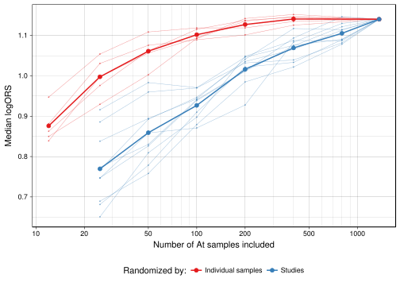
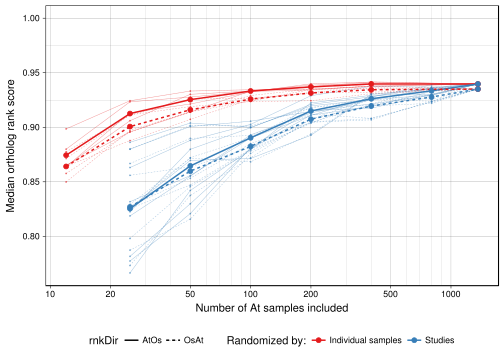
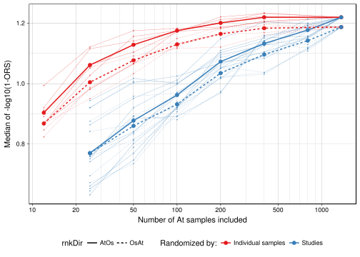

Illustrate how the number of samples affect the ortholog rank score (ORS).
To test the effect of the number of samples we picked subsets of various sizes out of the 1363 At samples available and calculated ORS (PCC+MR) against the full set of Os samples (454 samples). Only 1:1 orthologs were included (~5k genes) to save computation time.
Samples were permuted in two different ways, either by shuffling the order of the individual samples or by shuffling the order of the studies (i.e. keeping samples from the same experiment together). This was repeated 10 times for the studies and 5 times for individual sample permutations. Using the permuted sample order, the first 12,25,50,100,200,400 and 800 samples were used to calculate ORS.
When randomizing by study, the median ORS always increase when the number of samples increases. In contrast, when randomizing by individual samples, the ORS seem to reach the maximum and stay level after just one tenth of the samples have been included. Note that, although seldom, there are points were the additional samples results in a lower median ORS.
Figure text: Median ORS between At and Os using various number of permuted At samples. Each of the thin lines represent one sample permutation, where each point represents the same samples as the previous point plus addition samples. The thick lines show the mean of the permutations.

But how stable are the ORS values between the permutations? The plot below shows the correlation between the logORS values from the different permutations.
(Alternative figure) The figure below shows the same as above but with ORS for both directions (At -> Os and Os -> At).

(Alternative figure) Plot with -log10(1-ORS) transformed values:

Note that permuting the studies reflects a realistic situation where all available data are used. The results show that including more studies is almost always better. Interestingly, it also shows that similar performance can be achieved by using only a tenth of the samples when they are drawn randomly from the full set of studies. This indicates that diversity rather than quantity is important. A possible explanation for this is that most experiments include replicates and control for certain conditions which limit the number of observed regulatory states.
Other co-expression studies have used methods were samples are filtered and/or weighted to improve the results. It would be interesting to test whether such methods could give higher ORS than by simply including all samples.
Also note that in this test the ORS is limited by the Os samples and by the actual biological differences between Os and At.